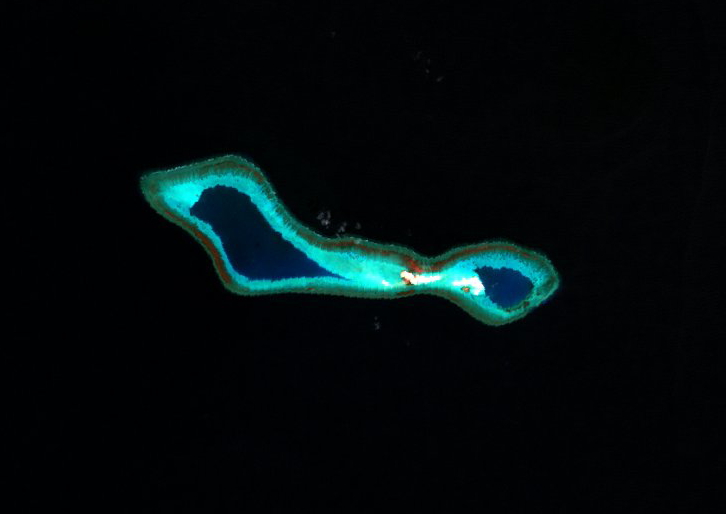

The West Philippine Sea
| A photo of Pagasa Island, the second-largest island in the Spratly group of islands and is the largest island in the Spratly group of islands controlled by the Philippines. Source: Bito-onon, E., Jr. (2020). [An aerial view of Thitu Island (Pag-asa Island)]. Retrieved from https://www.rappler.com/nation/263579-watch-upgrades-pagasa-island-continue-chinese-militias-prowl-waters | A photo of Chinese military forces occupying Mischief Reef. Source: Tongo, R. (2016). [This May 11, 2015, file photo, shows land reclamation of Mischief Reef in the Spratly Islands in the South China Sea. An international tribunal has found that there is no legal basis for China's claiming rights to much of the South China Sea.]. Retrieved from https://www.usnews.com/news/best-countries/articles/2016-07-13/whats-happening-in-the-south-china-sea |
The West Philippine Sea is a large body of water located at the western waters of the Philippine Area of Responsibility. It refers to a eastern portion of the South China Sea itself, although it can be confused for the South China Sea as a whole. The West Philippine Sea is controlled by the Philippine government, though this has been disputed by the Republic of China. The territory of the West Philippine Sea contains Scarborough Shoal and multiple islands belonging to the Spratly group of islands.
A view of Scarborough Shoal from above. Source: [A view of Scarborough Shoal from above.]. (n.d.). Retrieved from https://amti.csis.org/scarborough-shoal/
Scarborough Shoal
Scarborough Shoal, also known as Panatag Shoal is a landmass that is legally considered as a rock and is located 120 nautical miles west of Luzon. According to the Asia Maritime Transparency Initiative (n.d.), no manmade structures have been built at Scarborough Shoal. Despite numerous sources, including maps, stating that the area is within Philippine territory, Chinese vessels patrol around the area, basically giving China control over the region.
A view of West York Island. West York Island is one of the islands belonging to the Spratly group of islands that is under Philippine control. Source: [A view of West York Island from above.]. (n.d.). Retrieved from https://amti.csis.org/west-york-island/
A view of Commodore Reef. Commodore Reef is one of two reefs part of the Spratly Islands that is within Philippine control. Source: [Commodore Reef is an atoll of Spratly Islands.]. (1999). Retrieved from https://commons.wikimedia.org/wiki/File:Commodore_Reef,_Spratly_Islands.png
Spratly Islands
The Spratly Islands are a group of islands scattered around the southern parts of the South China Sea. Countries located near the area, such as China, Vietnam, or Malaysia, have control over different islands that are part of the Spratly Islands. However, the lists of these islands often change according to conditions presented, such as the presence of other foreign countries. With that said, however, there are nine islands or reefs located in the area that have been confirmed to be under Philippine control.
According to Vuving, L. (2016), these are the following:
- Thitu Island/Pagasa Island (the largest Philippine-controlled island belonging to the Spratly group of islands)
- West York Island/Likas Island
- Northeast Cay/Parola Island
- Nanshan Island/Lawak Island
- Loaita Island/Kota Island (not to be confused with Loaita Cay)
- Loaita Cay/Panata Island (not to be confused with Loaita Island)
- Flat Island/Patag Island
- Second Thomas Shoal/Ayungin Shoal, and
- Commodore Reef/Rizal Reef
- Asia Maritime Transparency Initiative (n.d.). Scarborough Shoal. Retrieved from https://amti.csis.org/scarborough-shoal/
- Vuving, A. L. (2016, May 09). South China Sea: Who Occupies What in the Spratlys? Retrieved from https://thediplomat.com/2016/05/south-china-sea-who-claims-what-in-the-spratlys/